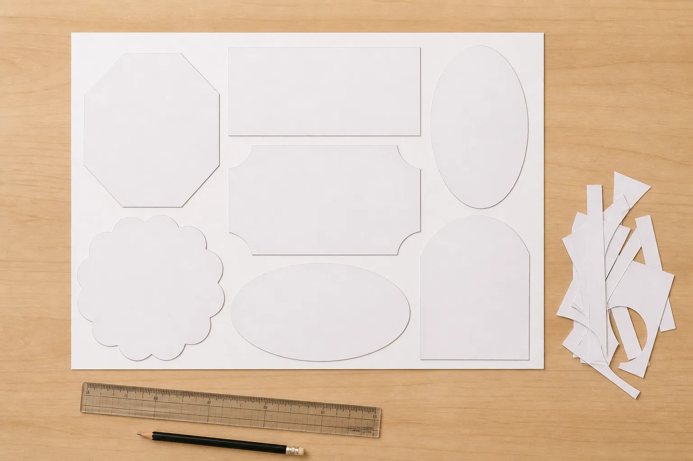
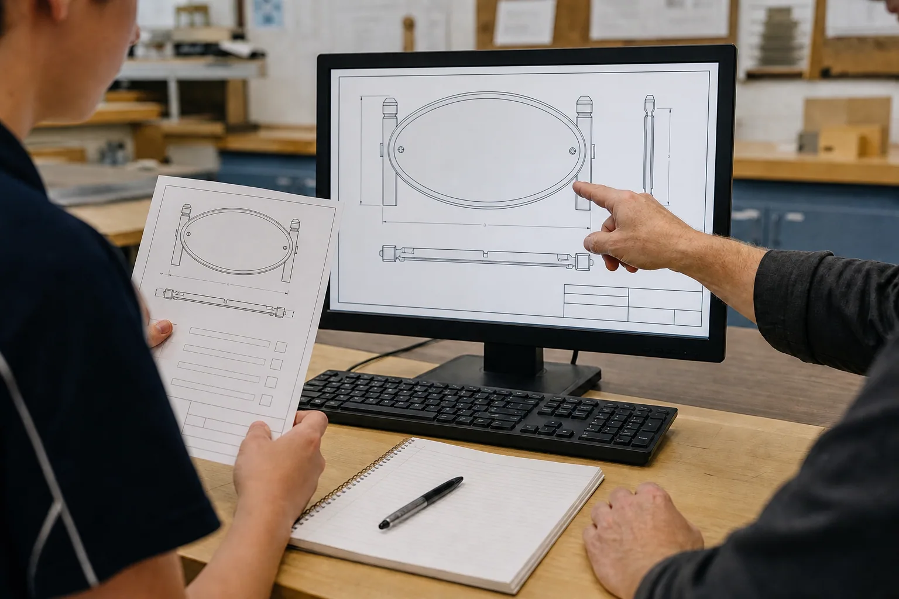

Module 3 PowerPoint
Editable classroom presentation covering all three named learning sections.
Section 1
Material properties and selection
Explain how designers connect measurable and observable material properties to purpose, environment, appearance and production constraints without treating a photograph as a specification.
Properties describe how a material behaves
A material property is a characteristic that helps a designer predict how a material may behave. Strength describes resistance to a force that could pull, push or bend it. Hardness describes resistance to scratching, denting or wear. Toughness is the ability to absorb energy without breaking suddenly. Ductility and malleability describe different ways a material can change shape without cracking. Corrosion resistance describes how well a material withstands chemical attack from its environment. Mass, surface texture and appearance can also matter in a product.
No single property makes a material ‘best’. A hard material may resist marks yet be harder to shape. A lightweight material may be easier to handle but still needs enough stiffness for its purpose. Designers therefore compare a group of properties against the design need. The Drive guide names aluminium or steel sheet as possibilities for its CNC sign pathway, but that statement does not identify the material in the supplied Swinging Sign photograph and does not set the material for every pathway.
Fit for purpose means matching properties to use
A fit-for-purpose choice begins with questions about use. Will the product be handled, hung, viewed from a distance or exposed to moisture? Does it need to hold another object, keep its shape, present a readable surface or allow a particular finish? The answers become selection criteria. A property is relevant only when the designer can explain its connection to one of those criteria.
The three project photographs suggest different design problems, not interchangeable specifications. A hanging sign must communicate clearly and remain suitable for its approved display context. An LED tea-light holder must support an LED light safely within the teacher-approved design; this course does not authorise a real flame. A pot-plant holder raises questions about support, balance and loading that the teacher must define. In each case, a sound justification follows the pattern: need, relevant property, evidence, decision.
Selection involves trade-offs
Design decisions rarely maximise every quality at once. A designer might value durability, low mass, a particular appearance, efficient material use and ease of approved production, but one option may not lead in every category. A trade-off is a deliberate compromise made after comparing what matters most. It is stronger than choosing by habit or appearance alone because the reason can be checked.
A comparison table can keep the reasoning visible. List the confirmed criteria down one side and the teacher-approved material options across the top. Add evidence rather than vague scores: for example, ‘lower mass supports easier handling’ is more useful than ‘good’. Mark unknown information instead of guessing. Environmental thinking also belongs in the comparison: consider likely service life, the amount of stock required, opportunities to reduce offcuts, maintenance needs and the approved end-of-life pathway.
A justification links evidence to a decision
A clear material justification is a short argument, not a shopping list. State the product need, identify the property that answers that need, use reliable evidence, acknowledge one trade-off and finish with a conditional decision. For example: ‘The design needs a stable, readable display surface. Of the teacher-approved options, Material A has the most suitable stiffness for that purpose. It may create a mass trade-off, so the mounting proposal also needs checking. I recommend Material A if the teacher confirms the stock and mounting system.’
Notice what the example does not do: it does not invent a grade, thickness, load or process. Those are local project facts. Good planning separates what is known from what still needs approval. This makes the proposal safer and easier to revise because the teacher can see the reasoning and the exact decision points.
Key vocabulary
- property
- A characteristic used to describe or predict material behaviour.
- fit for purpose
- Suitable for the intended use and confirmed criteria.
- trade-off
- A deliberate compromise between competing advantages or limits.
- corrosion resistance
- Resistance to material damage caused by chemical reaction with the environment.
- justification
- A reasoned decision supported by relevant evidence.
Metal is one material, so any metal will behave the same way.
Metals and metal forms have different combinations of properties. Selection must be based on confirmed criteria and approved options, not the broad label ‘metal’.
Takeaway: Choose from teacher-approved options by matching relevant properties to the product's confirmed use, comparing trade-offs and writing an evidence-based justification.
Local workshop boundary: Your teacher will confirm the material, stock form and practical processes for your pathway. Do not copy a material choice from a photograph or another student's project.
Video or no-stream pathway
No-stream learning pathway
Property-to-purpose evidence sort
Covers the same property, trade-off and justification ideas as the section's visual explanation without requiring video or audio.
- Read four short product needs: readable display, low handling mass, durable surface and efficient use of stock.
- Match each need to the property you would investigate, then explain why the match is relevant.
- Read the model comparison and identify the evidence, trade-off and conditional decision.
Evidence prompt: Record the decision or explanation named in the final step.
Streaming is optional. The pathway above covers the section learning on its own. Open this record in the media library.
Check your understanding: material properties and selection · 10 questions + one response
Formative learning evidence
Answer all ten questions, use the feedback to revisit exact help, then complete the scaffolded response. Work saves only in this browser.
Higher-order response
Justify a provisional material choice for one project pathway using only teacher-approved options. Explain how the choice responds to purpose, identify a trade-off and state what still requires confirmation.
Use these prompts
- What confirmed use and criteria does the material need to support?
- Which relevant properties and evidence support your provisional choice, and what trade-off remains?
- What local material, stock, process or mounting detail must your teacher confirm before production?
Success criteria
- Links at least two relevant properties to confirmed product needs using clear evidence.
- Acknowledges a genuine trade-off and keeps unconfirmed local facts conditional.
Nothing saved yet.
Section 2
Measurement, layout and resource efficiency
Show how clear measurement information and purposeful layout reduce avoidable error and waste before material is processed.
Measurement communicates intent
Measurement is part of design communication. A dimension tells another person the intended size or location of a feature. A unit gives the number meaning. A reference point or datum helps everyone understand where a measurement begins. When information is consistent, a designer, teacher and producer can discuss the same proposal without relying on memory or guesswork.
Accuracy means closeness to the intended or accepted value. Precision means the level of detail or repeatability in a measurement. They are related but not identical. A set of repeated measurements can be precise yet all miss the intended value. For project planning, students should record the teacher-approved values clearly, keep units consistent and check that the digital drawing and planning notes describe the same design.
Layout is a spatial plan
Layout describes how shapes or parts are arranged within an available area. Good layout considers orientation, spacing, confirmed edge requirements and the relationship between parts. It also keeps readable features and mounting locations connected to the design intent. The exact spacing and production allowances depend on the approved process, so they must come from the teacher rather than from this course page.
A useful check is to compare the drawing, the layout and the design criteria. Are all required parts present? Is the orientation intentional? Are repeated elements consistent? Does the proposal stay inside the confirmed stock boundary? Is there enough information for the teacher to review it? These questions catch mismatches before material is committed.
Nesting can reduce unused material
Nesting is the arrangement of shapes within stock so that the available area is used thoughtfully. It is not simply pushing shapes as close as possible. The layout must still follow teacher-approved spacing, orientation, edge and process requirements. Within those limits, rotating or grouping suitable shapes may reduce the amount of unused material and leave more useful offcuts.
A safe learning-only model uses paper shapes on a ten-by-ten grid. If the shapes cover sixty squares, the planned coverage is 60% of the grid. The remaining forty squares are not automatically ‘waste’: some may be unusable gaps, while a larger connected area might be a useful offcut. This paper example explains the idea of material yield but does not set a target or layout for the actual project.
Efficiency includes accuracy, time and future value
Resource efficiency means getting useful value from materials, time and effort while meeting the design criteria. A layout that saves a small area but makes checking difficult may not be the strongest plan. Likewise, rushing can create errors that consume more material later. Designers compare likely material use, clarity, repeatability and the chance of rework.
Before approval, use a three-part check: match the recorded dimensions to the approved information; compare the digital layout with the design criteria; and identify what will happen to useful offcuts under the teacher's system. Record revisions with a date or version so the reason for change is traceable. The aim is not a perfect-looking page. It is a plan that another person can understand, question and approve.
Key vocabulary
- dimension
- A stated size or location used to communicate design intent.
- datum
- An agreed reference point or line from which measurements are understood.
- accuracy
- Closeness to an intended or accepted value.
- precision
- The detail or repeatability of a measurement.
- nesting
- Arranging shapes within stock to use the available area thoughtfully while meeting approved requirements.
- offcut
- Material left after parts are produced, which may still have useful value.
The most efficient layout always packs shapes as tightly as possible.
A valid layout must first meet all approved spacing, edge, orientation and process requirements. Efficiency is considered within those boundaries.
Takeaway: Clear units, reference points and versioned layouts make intent checkable; nesting can improve material use only within the teacher-approved production boundaries.
Local workshop boundary: Use only the dimensions, clearances, allowances and stock information issued or approved by your teacher. Practice examples in this section are not project measurements.

Video or no-stream pathway
No-stream learning pathway
Paper nesting worked example
Provides the same layout comparison, simple yield calculation and approval boundary without video.
- Compare a scattered and grouped arrangement of the same paper shapes.
- Count covered grid squares and identify any connected blank area that could remain useful.
- Explain why the tighter arrangement would still need teacher-approved spacing before becoming a production layout.
Evidence prompt: Record the decision or explanation named in the final step.
Streaming is optional. The pathway above covers the section learning on its own. Open this record in the media library.
Check your understanding: measurement, layout and resource efficiency · 10 questions + one response
Formative learning evidence
Answer all ten questions, use the feedback to revisit exact help, then complete the scaffolded response. Work saves only in this browser.
Higher-order response
Evaluate two learning-model layouts for the same set of paper shapes. Recommend one by considering communication accuracy, approved boundaries, material use and the usefulness of remaining offcuts.
Use these prompts
- What evidence shows that each layout communicates the intended parts and reference information clearly?
- How does each layout use the available area, and what kind of offcut might remain?
- Which layout do you recommend, and what approved spacing or process information would still be needed?
Success criteria
- Compares both layouts using at least three relevant criteria rather than appearance alone.
- Makes a reasoned recommendation while clearly separating the paper model from actual project requirements.
Nothing saved yet.
Section 3
Onshape drawings, mounting and approval
Help students assemble a reviewable Onshape drawing-and-physical proposal and understand why mounting and authorisation must be considered before production.
An Onshape drawing must communicate the intended geometry
Onshape is the drawing and CAD program used for all plans in this course. A document can connect a sketch, model and drawing so that the design can be reviewed through clear views and dimensions. That connection improves traceability, but a polished drawing does not prove that every dimension, material or production decision has been approved.
Drawing readiness is a quality question. The selected views, orientation, approved dimensions, annotations and current revision should agree with the model and design criteria. The teacher confirms the drawing template, units, scale convention, dimensioning requirements and export format. Students should prepare a clear Onshape proposal and let the teacher complete the technical approval rather than guessing local or machine requirements.
Version control prevents the wrong file being used
Version control is a simple way to identify the current design and preserve earlier thinking. A useful record includes a meaningful project identifier, a version or date and a short revision note. The local naming pattern must come from the teacher, especially where privacy rules affect names or identifiers. Saving over every earlier version can remove useful evidence; keeping many files with unclear names can create a different problem.
A review record should answer three questions: Which file was checked? What changed after feedback? Which version is now awaiting or carrying approval? A thumbnail or screen capture can support the record, but it should not include private student information unless the teacher has authorised it. Good version control links the CAD file, folio evidence and approval decision so that the production team is not relying on memory.
Mounting is part of the design system
Mounting is not an afterthought because it affects orientation, balance, clearance, appearance and how forces travel through a product. The Drive worksheet lists possible categories such as hooks, chain, holes and bolts or another solution. Those examples are prompts, not an approved choice. The photographed Swinging Sign also cannot establish how it should be installed or what loads it can carry.
A mounting proposal should identify the intended display context, the relationship between the sign and its support, how the sign should sit when at rest and what uncertainties need checking. For the LED tea-light holder, the approved support and LED-only use need confirmation. For the pot-plant holder, the teacher must define the intended pot, loading and stability requirements. Students can reason about the system, but they must not test an unapproved load or installation.
Teacher approval is a design hold point
A hold point is a planned pause before a decision becomes difficult or expensive to reverse. Teacher approval before production is a hold point. It allows the design, file, material proposal, layout, mounting concept and safety boundary to be considered together. Approval is not a judgement of personal worth; it is a quality and safety control used in professional production as well as school workshops.
A strong approval pack is concise and traceable. Include the current design view, file version, criteria check, material justification, layout, mounting proposal and a list of unresolved questions. If feedback requires revision, record the change and return the updated version for review. Do not assume silence means approval. Production begins only when the teacher communicates that the required checks are complete and gives the local instruction for the next stage.
Key vocabulary
- Onshape drawing
- A page-based representation of CAD geometry using selected views, dimensions and annotations for communication and review.
- version control
- A system for identifying, tracking and distinguishing revisions.
- mounting system
- The connected parts and supports that position a product in its intended context.
- hold point
- A planned pause for checking or authorisation before work continues.
- traceability
- The ability to connect a decision or result to its source, version and evidence.
If an Onshape model or drawing looks correct on screen, it is automatically ready to make.
Appearance is only one check. The teacher-approved workflow must also confirm views, dimensions, version, export, mounting relationship and production suitability.
Takeaway: Prepare one traceable current Onshape proposal, connect its drawing and mounting concept to the design criteria, and wait for explicit teacher approval at the production hold point.
Local workshop boundary: An Onshape model or drawing that opens is not automatically production-ready. Your teacher decides the document location, naming, units, drawing template, approved dimensions, export pathway, mounting design and approval process.

Video or no-stream pathway
Optional verified clip + complete no-stream pathway
Optional verified clip: Onshape Drawings: Master the Dimension Tool - Tech Tip · Onshape · use 0:04–0:43.
Watch for: How does the basic Dimension tool change the result according to the geometry selected?
Published by Onshape; checked 2026-09-01. This clip teaches a digital concept only and does not control project, machine or safety facts.
Onshape drawing and approval-pack walkthrough
Covers Onshape drawing interpretation, file traceability, mounting-system thinking and the explicit approval gate without showing a machine workflow.
- Inspect a fictional Onshape drawing card and identify the views, current version and revision note.
- Check whether the drawing, design criteria and mounting-concept cards agree, and flag any dimension or export requirement that is still unknown.
- Sort the proposal into ‘ready for teacher review’, ‘needs information’ or ‘approved to proceed’, explaining that only the teacher can assign the last state.
Evidence prompt: Record the decision or explanation named in the final step.
Streaming is optional. The pathway above covers the section learning on its own. Open this record in the media library.
Check your understanding: onshape drawings, mounting and approval · 10 questions + one response
Formative learning evidence
Answer all ten questions, use the feedback to revisit exact help, then complete the scaffolded response. Work saves only in this browser.
Higher-order response
Apply the approval-gate idea to a fictional Onshape project proposal. Explain whether its drawing and connected evidence are ready for teacher review, identify what is present or missing, and recommend the next action without assuming production approval.
Use these prompts
- How well do the current Onshape drawing, version record and design criteria agree?
- What does the mounting proposal explain, and what local information is still unknown?
- Should the proposal be revised, submitted for review or held for explicit approval, and why?
Success criteria
- Uses evidence from the fictional pack to distinguish file readiness, review readiness and production approval.
- Recommends a safe, traceable next action and identifies at least one teacher-controlled decision.
Nothing saved yet.
Module review
Find every learning package
The drawers stay closed until you choose them. Use this checklist to revisit all three directly.
- ○Material properties and selection
- ○Measurement, layout and resource efficiency
- ○Onshape drawings, mounting and approval